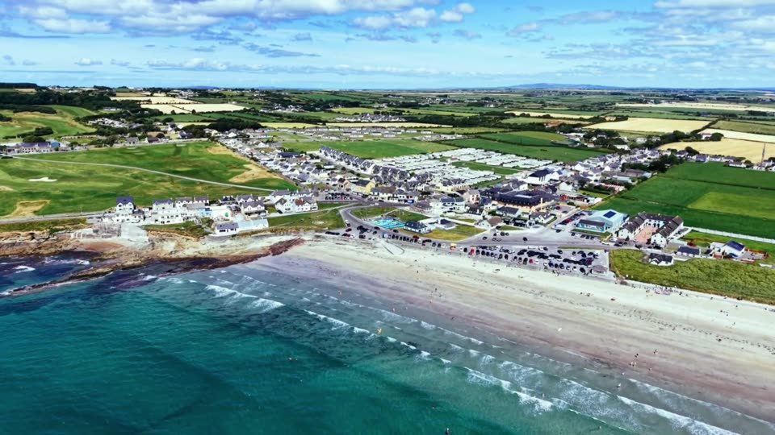

Local businesses
Where to eat, drink, stay and play in Ballyheigue.
Pubs and bars
Flahive's
The villageLively village pub, highly rated for its atmosphere, music and friendly staff.
O'Regan's Bar
Main StreetLong-established bar with a restaurant and function room. Great music nights.
Kirby's Lounge
The villageBar and restaurant known for good food, good beer and a friendly welcome.
White Sands Hotel bar
Main StreetHotel bar opposite the beach, with evening entertainment in summer.
Cafés and food
Tides Café
Main StreetBreakfast, brunch, lunch, speciality coffee and homemade treats. Dog friendly.
The Peachy Bean
Main StreetCoffee shop for an early cup and a bite before the beach.
The Krusty Krub
Main StreetFamily-friendly spot for casual food, open late.
The Sea Shell
Top of the StreetFish and chips to eat on the seafront.
Kebab Cottage
The villageTakeaway with a wide menu.
Tony's Ice Cream Van
The seafrontNo trip to Ballyheigue is complete without a cone.
Centra Ballyheigue
Main StreetCoffee, deli, ice cream and beach supplies.
Things to do
Ballyheigue Beach
BuncurrigBlue Flag beach with parking, toilets, a playground and summer lifeguards.
Ballyheigue Castle Golf Club
Castle groundsNine holes around the castle ruins. Visitors welcome.
Healing Heat Sauna
Ballyheigue BeachSeaside sauna sessions, ideal after a sea swim.
Ballyheigue Amusements
The seafrontGames and attractions for families. A rainy-day saviour.
Roger Casement statue
Above the beachA small green with a big view over the bay.
Glenderry Souterrains
Near the villageAncient underground passages, a few miles out.
Places to stay
White Sands Hotel
Main StreetFamily-run three-star hotel a minute from the beach, with a restaurant.
O'Neill's B&B
The villageHighly rated B&B close to the beach and village.
Bayview Glamping
BallyheigueGlamping with a view of the bay.
Casey's Caravan Park
BallyheigueCaravan park handy for the beach and village.
Kerry Holiday Village
BallyheigueSelf-catering holiday homes for families and groups.